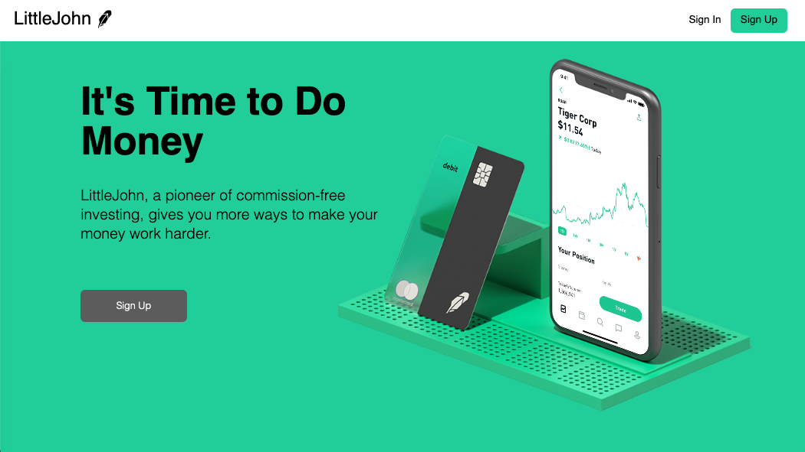
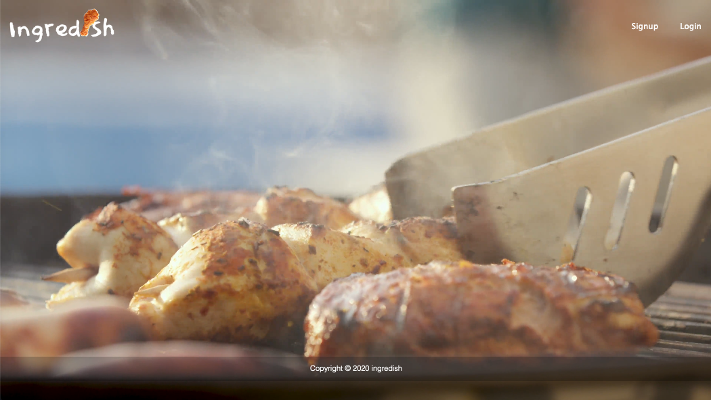
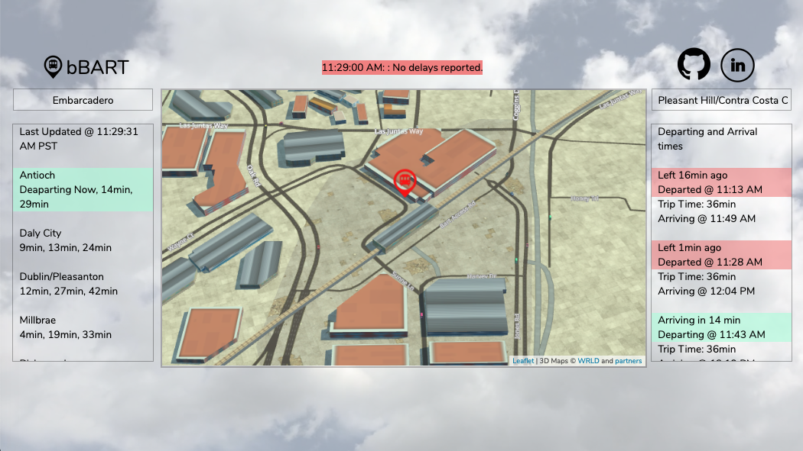

About
I'm a full stack software engineer with a passion for Ruby, Rails, React, Redux, and JavaScript who enjoys
learning new
technology and skills to build innovative and intuitive projects.
I love challenges, and transforming ideas into codes gives me utmost satisfaction. When I'm not in front of my
computer
coding, you can find me mountain biking down trails and switchbacks or flying drones.
Projects

Robinhood Clone | React, Redux, Ruby on Rails, PostgreSQL
- Ensured user privacy by securly salting and hashing users’ passwords using BCrypt
- Implemented Yahoo Finance API to fetch historical and live stock information, and graphed in real-time using ReChart library
- Displayed relevant new articles utilizing NewsAPI and search terms through filtering and sorting stock symbols from the database
- Created pixel perfect front page including the usage of HTML5 video tag and CSS

Search recipes by ingredients | React, Redux, Node.js, Express.js, MongoDB
- Led a team of four Software Developers, and organized Git flow for efficient pull requests and merges
- Seeded and organized recipe data through MongoDB shell client
- Fetched data asynchronously by making Axios promise calls
- Designed Responsive UI that dynamically adjusts to user’s device screen size by making media query rules in CSS

Interactive BART schedules and map | Javascript, Node.js, Express.js
- Sorted and filtered data gathered through BART API, and displayed through DOM insertion
- Utilized WRLD.js library to create an interactive 3D map that populates BART stations using their geolocations
- Built the backend using Node.js and Express.js to prevent Cross Origin resource sharing when making API calls